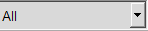
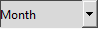

 - Combobox для фильтрации по категории. Нажмите, в открытом списке выберите нужную категорию.
 - Combobox для фильтрации по дате. Нажмите, в открытом списке выберите за какой промежуток времени хотите увидеть транзакции.

- Отображение даты и фильтрация транза по дате. С помощью кнопок ">", "<" переключайтесь на нужную вам дату.